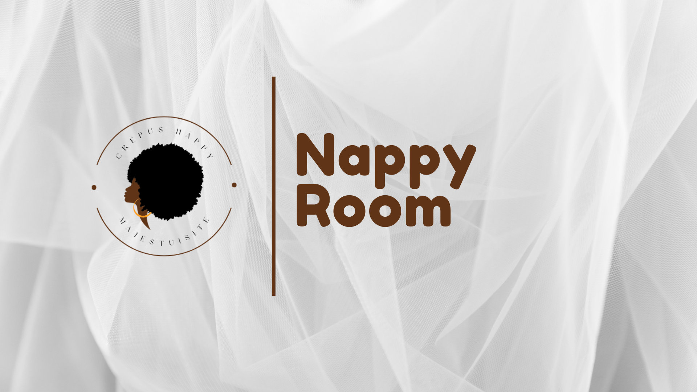

"Bienvenue dans NappyRoom, l'espace dédié à la célébration et à l'élégance naturelle des cheveux afro"
Chez NappyRoom, nous honorons la diversité de textures, de boucles et de styles qui font la richesse de vos cheveux. Notre mission est de vous inspirer, de partager des conseils pratiques et de créer une communauté où la beauté naturelle est célébrée.
Explorez nos articles sur les types de cheveux afro, découvrez des astuces de soins capillaires adaptées à vos besoins, et plongez dans une galerie de styles variés. Que vous soyez au début de votre parcours capillaire, NappyRoom est votre havre d'inspiration.
Rejoignez-nous dans cette aventure capillaire où l'authenticité règne et où chaque boucle est une histoire à raconter. Bienvenue chez NappyRoom, où la puissance des boucles naturelles est célébrée avec amour !